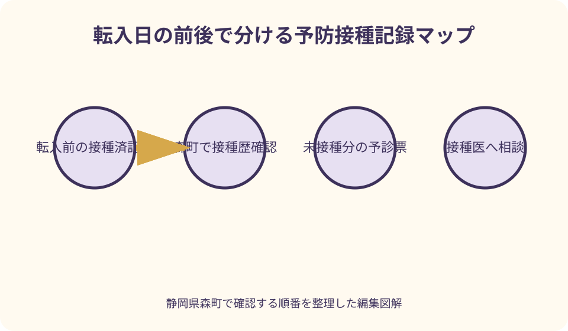
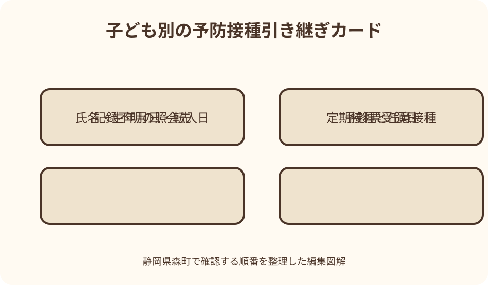

妊娠・子育て手続｜最終確認 2026-08-10
静岡県森町へ転入した子どもの予防接種｜記録確認と予診票の受け取り方
転入届を出しても、前住所地の予防接種予診票をそのまま森町で使えるとは限りません。静岡県森町は、転入前の接種歴を確認したうえで、未接種の定期予防接種について予診票を渡すと案内しています。母子健康手帳を中心に、転入日、接種済みの回数、記録にない接種、任意接種を分けて伝えることが、重複と回数不足を避ける出発点です。

編集イラスト静岡県森町へ転入したら最初にすること
最初の結論は、転入前の接種歴を一件ずつ確認できる状態にして、森町の健康こども課こども家庭係へ示すことです。森町公式ページは、転入前に受けた予防接種を確認した後、未接種の予防接種について予診票を渡すと説明しています。先に接種予約だけを入れるより、記録確認と予診票の受け取りを入口にすると流れが整います。
対象として町が明記しているのは、中学生までの子どもです。転入手続きの際に母子健康手帳を持参するよう案内されているため、住民異動の書類と別袋にせず、すぐ取り出せる場所へ入れておきます。兄弟姉妹がいる家庭は、手帳と追加記録を子ども別に分けると、接種回数の取り違えを防ぎやすくなります。
転入日も確認表へ書きます。転入前に受けた接種と、森町へ住所を移した後に受ける接種では、確認する自治体や使う予診票が異なり得るからです。届出日だけでなく、実際の転入日、直近の接種日、次回予約の有無を並べると、窓口へ事情を短く伝えられます。
この記事の確認日は2026年8月10日です。対象年齢、使用するワクチン、予診票、協力医療機関は年度途中でも更新される可能性があります。実際に動く日は、森町公式の予防接種ページと当年度の一覧を開き、健康こども課の最新案内を優先してください。
母子健康手帳を接種歴の中心に置く
母子健康手帳の予防接種欄には、ワクチン名、接種年月日、製造番号や接種機関などが記録されます。まず全ページをめくり、付箋や別紙が挟まっていないかも確かめます。表紙だけを撮影して送るのではなく、接種欄が読めることと、どの子どもの手帳か分かることが大切です。
転入相談前には、手帳の記載を自分で医学的に評価する必要はありません。ワクチンごとに日付を転記し、空欄、判読しにくい印、同じ日に複数記載された箇所へ印を付ける程度で十分です。空欄を未接種と決めつけず、窓口で照会したい項目として残します。
母子健康手帳を紛失している場合は、記憶だけで回数を埋めないでください。森町には母子健康手帳の再交付相談ができる一方、再交付した手帳へ過去の全記録が自動的に戻るとは限りません。前住所地、接種した医療機関、手元の明細やアプリ記録のどこに根拠があるかを分けて相談します。
旧手帳が汚れていても、文字や印が読める部分は確認材料になり得ます。自己判断で処分せず、透明袋などへ入れて持参します。再交付済みの手帳と旧手帳が後からそろった場合も、転記や保管方法を町へ尋ね、二冊の記録を勝手に一冊へ書き写さない方が確実です。
接種済み記録を子ども別・ワクチン別に並べる
記録表は、子どもの氏名と生年月日を先頭に置き、ワクチン名、何回目か、接種日、接種した自治体または医療機関、根拠資料の順で作ります。何回目か不明なら空欄にし、接種日だけを正確に写します。推測を事実と同じ欄へ入れないことが、確認の質を上げます。
根拠資料には、母子健康手帳、前住所地の接種済証、医療機関が作成した記録、海外の証明書などがあります。スマートフォンの予定通知や家族のメモは手掛かりになりますが、それだけで公的な接種歴として扱われるかは町へ確認が必要です。資料の種類を明記して見せます。
兄弟姉妹で同じワクチンを受けていても、記録を一枚に混ぜません。生年月日や接種開始時期によって対象となる案内が違うことがあり、同じ家庭内でも次の接種が同日になるとは限らないためです。封筒やクリアファイルも子どもごとに色を変えると窓口で扱いやすくなります。
前住所地で予約済みだった接種は、予約票と未使用の予診票を保管したまま相談します。ただし、予約があることと接種済みであることは別です。キャンセルの要否は前の医療機関へ、森町での新しい予約手順は町や協力医療機関へ、それぞれ確認します。
森町用の予診票へ切り替える流れ
予診票は、保護者が体調や既往などを記入し、接種時の確認に使う書類です。前住所地の自治体名が入った未使用票を持っていても、森町でそのまま利用できると決めつけず、健康こども課へ提示します。町の接種歴確認後に、未接種分について森町の案内に沿う予診票を受け取ります。
窓口では『予診票を全部ください』ではなく、母子健康手帳と追加記録を見せたうえで、どの予防接種の何回目が未接種扱いになるかを確認します。重複接種と回数不足の双方を避けるため、森町も接種済み記録を先に確かめる流れを示しています。
受け取った予診票は、子どもの氏名、対象となる予防接種、使用期限や案内事項を確かめ、接種予定日まで保管します。転入直後に住所や保険情報が変わっている場合、どの住所を書くか迷ったら空欄のままにせず、町または予約先へ尋ねます。
紛失や書き損じ、受診延期で予診票が使えなくなった場合の再交付方法も、健康こども課こども家庭係へ確認します。コピーを独自に作る、前住所地の用紙へ書き換えるといった対応は避け、現在の森町の様式と受付方法に戻るのが安全です。
転入日と次の予定を一つの時間軸にする
時間軸の左端には、森町への転入日を置きます。その前に受けた接種、転入手続きをした日、町へ記録を提示した日、予診票を受け取った日、医療機関へ予約した日を順番に並べます。行政手続きと医療機関の予約を別行にすると、済んだことと残ったことが見えます。
転入前後に接種日が近い場合は、いつ、どこで、何を受けたかを先に伝えます。接種日の記憶が曖昧な状態で次の予約を確定せず、前住所地や接種医療機関への照会が必要かを町へ相談してください。確認に時間がかかる場合は、その間の扱いも尋ねます。
入園、入学、就学時健診などの予定が重なっても、提出期限と接種そのものの時期を同一視しません。施設へ記録の提出を求められたときは、現在確認中であること、確認先、次に結果が分かる見込みを伝え、未確認の回数を書き込まないようにします。
森町内では、自宅から保健福祉センターや医療機関までの移動時間も予定に含めます。北部や山間部から動く家庭、きょうだいを連れて移動する家庭は、受付時間だけでなく駐車、授乳、帰宅まで見込み、無理のない相談日を選びます。
未接種か記録漏れかを分けて確認する
手帳の欄が空いているとき、実際に受けていない場合と、受けたが記録が手元にない場合があります。この二つを同じ『未接種』として扱わず、保護者の記憶、医療機関名、接種した可能性のある時期をメモし、照会先を町へ相談します。
前住所地へ問い合わせる場合は、子どもの氏名、生年月日、当時の住所、居住期間、確認したいワクチンを用意します。本人確認や申請方法、記録の保存状況は自治体ごとに異なるため、電話だけで回答できるとは限りません。森町からの照会が必要かも含めて確認します。
医療機関の領収書や診療明細にワクチン名があっても、接種回数や公費・任意の区分まで読み取れないことがあります。資料は捨てずに示しつつ、そこから分からない内容を家庭で補完しません。記録として採用できる範囲は確認先の判断へ戻します。
記録が確認できないからといって、直ちに最初から全て受け直すとは限りません。反対に、保護者の記憶だけで接種済みと扱えるとも限りません。個々の対応は、町が把握する予防接種台帳や提出資料を踏まえ、接種医の判断につなげます。
接種間隔は家庭の計算だけで決めない
予防接種には、対象年齢、回数、前回からの間隔などの条件があります。ただし条件はワクチンの種類、接種開始時期、これまでの回数によって異なります。日付を数えるだけで次回を確定せず、森町が確認した接種歴を予約先へ伝えてください。
厚生労働省は定期接種実施要領や接種間隔の案内を公開していますが、一般向けページの一部分だけを読んで個別の可否を決めるのは適切ではありません。制度上の下限と標準的な時期が別に示される場合もあるため、町と接種医へ確認する材料として使います。
予定より間隔が空いた場合も、家庭で『無効になった』『初回からやり直す』と結論づけません。いつの接種が遅れ、どの記録が残っているかを伝え、現在の年齢と接種歴に応じた扱いを尋ねます。接種を急いで複数の医療機関へ重ねて予約しないことも重要です。
異なる種類のワクチンを近い日程で受ける場合や、同時接種を検討する場合は、体調を含めて接種医へ相談します。この記事は具体的な接種日を算定するものではありません。発熱や体調変化があるときは、予診票だけで判断せず医療機関の指示を受けます。
海外で受けた予防接種の記録を持ち込む
森町は、海外から転入し母子健康手帳がない場合、予防接種の記録が記載された書類を持参するよう案内しています。現地の接種証明書、医療機関の記録、予防接種カードなど、ワクチン名と日付が分かる原本をまとめます。
外国語の記録は、原本を保持したうえで、分かる範囲の日本語メモを添えると相談しやすくなります。製品名を自己流で国内のワクチン名へ置き換えず、記載どおり写します。翻訳が必要か、誰の翻訳を受け付けるかは町へ先に確認します。
海外での接種が日本の定期接種の回数にどう数えられるかは、書類の内容や接種状況を確認して判断されます。『同じ病気のワクチンだから一回と数える』などと家庭で決めず、渡航国、接種日、製品名、接種機関を示してください。
今後も渡航予定がある家庭は、森町で受けた分もその都度母子健康手帳へ記載してもらい、必要に応じ接種済証を保管します。紙を撮影して家族用の控えを作る場合も、原本の保管場所と更新日を記録し、画像だけを唯一の記録にしないようにします。
任意接種は定期接種と別の欄へ置く
任意接種の記録も、次の接種を考えるうえで大切です。ただし、定期接種の予診票交付と同じ扱いになるとは限りません。接種したワクチン名、日付、医療機関、費用負担の区分を記録し、森町の助成や案内があるかを個別に確かめます。
前住所地独自の助成で受けた接種は、森町に転入した後も同じ助成が続くと仮定しません。対象年齢、申請時点の住所、指定医療機関、事前申請の有無が異なり得ます。接種予約や支払いの前に、森町公式ページと担当係へ問い合わせます。
自己負担で受けた接種であっても、接種歴として母子健康手帳に記載されていれば窓口へ示します。定期か任意か分からない場合は、領収書だけで分類せず、当時の自治体や医療機関の資料を添えて確認を依頼します。
家族の希望と医療上の判断も分けます。受けたい時期や生活上の予定は相談材料になりますが、接種できるか、どの間隔を空けるかは医療機関へ確認します。費用や助成の質問は町、体調や接種可否の質問は接種医というように窓口を整理します。

窓口へ持参するものと質問メモ
基本の持参物は、子ども全員の母子健康手帳、前住所地の未使用予診票、接種済証や海外記録、次回予約の資料です。森町公式の通常接種時の持ち物には、母子健康手帳、予防接種予診票、こども医療費受給者証など住所を確認できるものが示されています。
転入時の記録確認で追加の本人確認書類が必要かは、訪問前に健康こども課へ尋ねます。保護者以外が相談や接種に同行する場合は、代理で可能な範囲と委任状の要否も確認します。森町は通常の接種で、祖父母など保護者以外の付き添いには委任状が必要と案内しています。
質問メモには、確認できない接種、森町の予診票が必要な接種、予約済みの日、海外や任意接種の記録、母子健康手帳紛失の有無を並べます。一度に長く説明するより、『記録確認』『用紙』『医療相談』の三列に分けると担当先が明確になります。
窓口で回答を得たら、確認日、担当部署、受け取った予診票名、次に連絡する医療機関を記録します。個人名をウェブ上へ公開する必要はありませんが、家庭内では後から照会できる程度の情報を残し、古い回答には日付を付けます。
医療機関へ予約するときの伝え方
予約時には、森町へ転入したこと、町で接種歴を確認したこと、受け取った予診票の種類、直近の接種日を伝えます。手元の記録に曖昧な箇所がある場合は隠さず、町へ照会中であることも伝えて、予約を確定してよいか尋ねます。
受診当日は、母子健康手帳、森町の予診票、住所が確認できるものなど、町が示す持ち物を再確認します。問診内容は事前に記入できる部分と当日の体温などを分け、判断に迷う項目を空想で埋めず、受付または医師へ確認します。
かかりつけ医を変える家庭は、これまでの病歴や服薬、接種後の経過で伝えるべき事項があるかを整理します。ただし、過去の反応から次回の安全性を家庭で断定しません。医療機関から診療情報の準備を求められた場合は、その指示に従います。
予約後に体調が変わったときは、キャンセルや延期を含め医療機関へ連絡します。転入手続きが済んだことや予診票があることだけで接種可否は決まりません。緊急性のある症状は、通常の予防接種相談とは分けて適切な医療相談につなげます。
記録を引き継ぐ良い点
良い点は、接種済みと未接種を根拠資料から分けることで、重複と回数不足の両方を防ぐ相談がしやすくなることです。森町の案内も、転入前の接種を確認してから未接種分の予診票を渡す順番を明示しており、家庭の整理と町の確認がつながります。
日付を一本の時間軸へ並べると、転入届、予診票交付、医療機関予約のどこで止まっているかが分かります。保護者の一人が平日に動けない家庭でも、確認済み事項と未確認事項を共有でき、同じ問い合わせを繰り返しにくくなります。
母子健康手帳だけでなく、海外記録や接種済証の所在を整えることは、入園・入学や次の転居でも役立ちます。今回だけの提出物として終わらせず、原本の保管場所、写真の更新日、町へ提示した日を一緒に残すと再利用できます。
任意接種を別欄にする利点は、公費対象の定期接種と費用相談を混同しないことです。接種歴としては全体を見せながら、予診票や助成の扱いは制度ごとに確認でき、家庭の予定と公式な条件の境界が分かりやすくなります。
森町の案内へ注文したい点
注文したい点は、転入者が窓口へ行く前に使える確認票を、町公式ページから一枚で取得できるとさらに便利なことです。ワクチン名、接種日、根拠資料、前住所地、次回予約を記入する様式があれば、兄弟姉妹の情報も整理しやすくなります。
予診票を受け取る場所、受付できる時間、転入届と同日に確認できない場合の相談方法も、転入者向けにまとまっていると迷いが減ります。現状は健康こども課こども家庭係の連絡先が明確なので、ウェブで読み切れない条件は電話で補うのが現実的です。
海外記録については、どの項目が読めれば相談を始められるか、翻訳の要否、原本と写しの扱いが例示されると準備しやすくなります。ただし、国やワクチンごとに事情が異なるため、例示だけで接種回数を確定しない注意も併記してほしいところです。
任意接種や前住所地独自助成の引き継ぎは、定期接種の説明から区別して案内されると誤解を抑えられます。家庭側は、ページに記載がないことを利用不可とも利用可能とも決めず、費用が発生する前に対象条件を問い合わせる必要があります。
記録がそろわないときの代案・結論
代案・結論として、母子健康手帳が見つからない場合は、再交付相談と過去記録の照会を同時に整理します。再交付を受けることと、接種済み回数が確認できることは別なので、前住所地や接種医療機関へ何を照会するかを健康こども課へ尋ねます。
一部の接種だけ証明できない場合は、確認済みの記録まで保留にせず、分かる部分と分からない部分を色分けして提示します。町や接種医が追加確認を求めたら、その項目だけを追跡し、家庭の記憶を証明書のように書き換えないことが大切です。
次の接種予定が迫っているのに確認が終わらない場合は、予約先へ事情を伝え、受診日を維持するか変更するか指示を受けます。書類がないまま接種できる、または必ず延期になるとはこの記事では断定できません。確認中の資料と連絡履歴を用意します。
最終的には、母子健康手帳を持って森町へ相談し、接種歴を確認してもらい、未接種分の予診票を受け取るのが基本線です。記録不明、海外接種、任意接種は別々の質問として添え、次回日程は町と医療機関の確認後に決めます。
家族で使う転入時チェックリスト
チェックリストの一段目には、子どもの氏名、生年月日、森町への転入日、前住所地、母子健康手帳の有無を書きます。二段目には直近の接種名と日付、三段目には未使用予診票、海外記録、任意接種の資料を置きます。
行動欄は、森町へ提示、前住所地へ照会、医療機関へ予約の三つに分けます。一つの項目へ複数の担当を書かず、誰がいつ連絡するかを決めます。回答待ちには期限ではなく次回確認日を書き、返答がないまま放置されるのを防ぎます。
兄弟姉妹の一覧には、全員共通の電話番号や転入日はまとめても、接種歴の行を共有しません。子ども一人につき一枚の記録を作り、表紙だけ世帯用にすると、町や医療機関へ必要な子どもの資料だけを渡せます。
チェックが済んだ後も、前住所地の予診票をすぐ捨てず、森町から処分方法の案内を受けるまで別封筒へ置きます。個人情報を含むため、不要と確認できた書類はそのまま家庭ごみに出さず、読めない状態にして処分します。
図解案1：転入日の前後で分ける接種記録マップ
一つ目の図解は、中央に転入日を置き、左側へ前住所地での接種、右側へ森町での確認と今後の接種を配置します。左側には母子健康手帳、接種済証、海外証明書、未使用予診票を描き、資料ごとの役割を見分けられるようにします。
転入日の直後には、健康こども課こども家庭係で接種歴を提示する場面を置きます。そこから『確認済み』『追加照会』『記録不明』の三本へ分岐させ、記録がないことを直ちに未接種と扱わない点を視覚化します。
右端は、未接種分の森町用予診票、医療機関への予約、接種後の手帳記録という順番です。予約前に町の確認を挟む構図にし、前住所地の用紙から直接医療機関へ矢印を引かないことで、差し替え確認の必要性を伝えます。
配色は、接種済みを深緑、追加確認を黄土色、今後の予定を青で表します。赤は危険の断定ではなく『家庭で判断しない』箇所だけに使い、森町の山並みと保健福祉センターへ続く道を背景にした地域固有の図にします。
図解案2：子ども別の予防接種引き継ぎカード
二つ目は、兄弟姉妹それぞれに一枚ずつ作るカード型の図解です。上部へ氏名、生年月日、転入日を置き、中段を定期接種、任意接種、記録不明の三列に分け、同じワクチンでも根拠資料を添えられる形にします。
定期接種の列には、ワクチン名、回数、接種日、森町用予診票の受領日を配置します。任意接種の列には、費用・助成を別途確認する印を付け、定期接種と同じ公費条件だと誤解しないデザインにします。
記録不明の列には、前住所地、医療機関、海外書類のどこへ照会するかを選ぶ欄を設けます。『未接種』という断定欄は置かず、確認結果と確認日を書いてから次の行動へ移る構成にします。
カード下部には、町への相談、予診票受領、医療機関予約、接種後記録という四つのチェック欄を置きます。母子健康手帳の小さなアイコンと森町の茶畑を添え、一般的なワクチン図ではなく、転入家庭が実際に使える編集図にします。

大石の視点：住所が変わる日に健康記録も引き継ぐ
大石の視点では、転入届は住所の変更で終わる書類ではなく、家族の暮らしの記録を新しい地域へつなぐ節目です。予防接種は回数と日付が重要だからこそ、記憶の強さではなく、母子健康手帳と一次資料を軸に引き継ぐ姿勢が欠かせません。
森町では町なかから山間部まで移動条件が違います。窓口と医療機関へ別日に行く家庭は、手続きが一度で完了しないことを失敗と考えず、確認日と次回行動を残してください。移動負担を見込んで電話確認を先に入れるだけでも、持参漏れを減らせます。
住まい探しや引っ越しの現場では、鍵、電気、水道、学校の準備が優先され、健康記録は箱の奥へ入りがちです。母子健康手帳だけは引っ越し荷物にせず手持ちにし、転入届の書類と一緒に動かす運用を、転居前から家族で決めておくと安心です。
記録が欠けていても、保護者を責める材料にはなりません。分からないことを分からないまま示し、森町、前住所地、接種医療機関へ順に確かめる方が、推測で整った表を作るより役立ちます。この記事も個別の接種可否ではなく、その確認経路を示すものです。
公式情報の読み分け方
森町公式の予防接種ページは、転入者の持参物、未接種分の予診票、通常接種時の持ち物、問い合わせ先を確かめる中心資料です。ページ更新日と当年度一覧を確認し、保存した画像だけでなくURLも家族へ共有します。
母子健康手帳の交付ページは、手帳を紛失したときの再交付相談を確認する資料として使います。再交付ページがあることから、過去の接種記録がどこまで復元されるかまでは読み取れないため、その点は健康こども課へ質問として戻します。
厚生労働省の予防接種・ワクチン情報と定期接種実施要領は、国の制度や最新の実施要領を確かめる資料です。家庭が条文から個別日程を算出するためではなく、町や医療機関の説明を理解し、古い情報との差を確認するために参照します。
こども家庭庁の母子健康手帳情報は、手帳が妊娠、出産、乳幼児期の健康情報を継続して記録する媒体であることを理解する助けになります。町の実務は森町公式を優先し、国の一般情報と役割を混ぜない読み方が必要です。
問い合わせ先と相談時の短い伝言例
森町の窓口は、健康こども課こども家庭係です。森町公式ページには、森町保健福祉センター内、電話0538-86-6330と掲載されています。受付できる日時や持参物は変更の可能性があるため、訪問直前に公式ページまたは電話で確認します。
電話では、『子どもと森町へ転入しました。中学生までの子が二人おり、母子健康手帳があります。転入前の接種確認と未接種分の予診票について、持参物と受付日時を教えてください』と、人数、記録の有無、質問を簡潔に伝えます。
記録が欠ける場合は、『一件だけ手帳に日付がなく、前の医療機関名は分かります。町へ持参する資料と、前自治体への照会方法を確認したいです』と説明します。未接種と決めて話さず、何が分かり何が不明かを区別します。
海外接種なら、『海外から転入し、母子健康手帳はありません。英語の接種記録に製品名と日付があります。原本、写し、翻訳のどれが必要か確認したいです』と尋ねます。先に資料の受け付け方を聞けば、不要な翻訳や再訪を減らせます。
接種後に記録を更新する
接種が終わったら、その場で母子健康手帳の記載を確認します。ワクチン名と接種日が読めるかを見て、気になる点は医療機関を離れる前に尋ねます。家庭の一覧にも日付を写しますが、手帳の原記録を上書きしたり貼り替えたりしません。
予診票の控えや接種済証を渡された場合は、母子健康手帳と同じ場所へ保管します。次回接種のお知らせをアプリへ登録するときも、入力後に原本の日付と照合し、アプリだけへ記録を移して紙を処分しないようにします。
森町は、もりまち子育て応援アプリにワクチン名や接種日を登録すると、スケジュール作成や通知に使えると案内しています。便利な補助ですが、登録内容が正しいかは利用者が確かめ、町や医療機関の記録に代わる唯一の資料とは考えません。
次に転居する可能性がある家庭は、今回の引き継ぎで受け取った予診票のうち使用済みと未使用を分け、森町で受けた接種を一覧へ追加します。転出時には未使用票の扱いを森町へ、転入先の新しい用紙を転入先自治体へ確認します。
迷ったときの最終確認
今日できる最初の一歩は、子どもごとに母子健康手帳を開き、森町への転入日と直近三件の接種日を紙へ写すことです。その紙、手帳、前住所地の予診票をまとめ、健康こども課こども家庭係へ受付方法を確認します。
町へは予診票と公費対象の確認、医療機関へは体調と接種可否の確認、前住所地へは過去記録の照会という役割分担にします。一つの窓口へ全ての判断を求めず、得た回答を同じ子ども別カードへ戻します。
接種歴の空欄、予定より長い間隔、海外記録、任意接種があっても、家庭だけで有効・無効や必要回数を断定しません。一次資料を示し、現在の年齢と状況を町と接種医へ伝えることが、次の適切な行動につながります。
まとめると、森町への転入時は『母子健康手帳を持参する』『接種済みを確認してもらう』『未接種分の森町用予診票を受け取る』『接種医と次の日程を相談する』の四段階です。任意接種と記録不明は別欄にし、確認日を残して進めてください。
公式情報・確認先
掲載内容は次の一次情報を基礎に整理しました。営業、料金、催し、交通は変わるため、出発前または手続き前にリンク先で最新情報を確認してください。
- 予防接種（静岡県森町、2026-08-10確認）
- 母子健康手帳交付（静岡県森町、2026-08-10確認）
- 子どもの健康診査案内（静岡県森町、2026-08-10確認）
- 予防接種・ワクチン情報（厚生労働省、2026-08-10確認）
- ワクチンの接種間隔（厚生労働省、2026-08-10確認）
- 母子健康手帳について（こども家庭庁、2026-08-10確認）